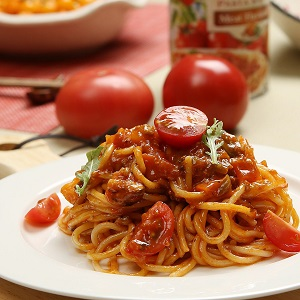

Welcome to the Online Restaurant
-

水煮鱼
满目的辣椒红亮养眼，辣而不燥，麻而不苦。"麻上头，辣过瘾",让水煮鱼在全国流行的一塌糊涂。 -

牛排
牛肉是王公贵族们的高级肉品，尊贵的牛肉被他们搭配上了尊贵身份的胡椒及香辛料等一起烹调，并在特殊场合供应， 以彰显主人得尊贵身份。 -

意大利面
作为意大利的法定原料，杜兰小麦是最硬质的小麦品种，具有高密度、高蛋白质、高筋度，其面紧实又有弹性， 并且会根据不同的面酱而决定口感。 -

白灼虾
"白灼"指将原汁原味的鲜虾直接放进清水里煮食。广州人喜欢用白灼之法来做虾，为的是保其鲜、甜、嫩的 原味，然后将虾剥壳并蘸酱汁而食。